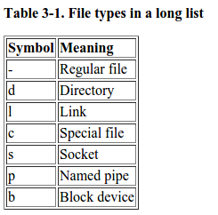

Linux filesystem
by Shrimadhav U K

Check this out!
- a directory for user programs (/usr)
- binary for the installed programs (/usr/bin)
- source code for the installed programs (/usr/src)
- a directory containing the users' personal data (/home)
- a directory to store temporary data like print- and mail-queues (/var)
- a directory for third party and extra software (/opt)
- a directory for the
important configuration files (/etc)
ls -l
Some more Linux utilities
login to athena dataserver
ssh ${USERNAME} @ 192.168.40.99
how did they DO that ?
figlet -ct -f small "Athena DataServer"
figlet: display large characters from ASCII text-c: center the text on screen-t: justifies according to the width of the terminal window-f small: selects the font file from /usr/share/figlet/ directory
fortune -s | cowsay -f tux
fortune -s: a short message for the day- /usr/share/cowsay/cows contains a list of COWS which can be used
cowsay -f: takes an argument from the list of COWS available